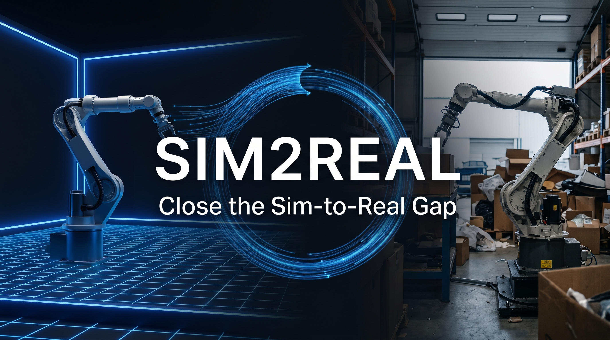

01
Real-world calibration layer
Passively ingests deployment telemetry and compares expected versus observed outcomes across environments, tasks, and robot types.
Sim2Real helps robotics teams detect why simulation-trained models fail in real environments, then turns those failures into better simulation conditions, stronger training data, and more reliable deployment performance.
By creating an account or requesting access, you agree to the Terms of Service and Privacy Policy. Paid subscriptions renew automatically until canceled.

Most robotics models fail in production for reasons that do not show up in clean synthetic training data. Lighting shifts, worn surfaces, box tilt, clutter, friction variance, dust, and sensor noise create failure patterns that standard simulation workflows miss.
Teams often respond by collecting more real-world data manually, but that process is slow, expensive, and difficult to scale across changing environments. Sim2Real closes that gap by learning directly from deployment failures and using them to improve future simulation runs.
Sim2Real captures what actually happened during robot execution, compares it with what the simulator expected, and generates better training conditions for the next run.
Collect camera, force-torque, IMU, and task outcome data from real robot operations.
Identify where simulation assumptions diverged from actual conditions, including geometry variance, friction, clutter, and contact behavior.
Generate updated simulation parameter sets and synthetic scenarios that better mirror deployment conditions.
Track whether transfer reliability improves over time and use the dashboard to prioritize the next calibration pass.
Each module is designed for robotics teams that need clear operational outcomes, not generic AI dashboards.
Passively ingests deployment telemetry and compares expected versus observed outcomes across environments, tasks, and robot types.
Classifies failure patterns and surfaces repeatable sim-to-real gaps by task, environment, object type, and severity.
Transforms observed discrepancies into updated simulation conditions including friction, clutter density, lighting variance, and pose randomness.
Uses structured scene interpretation to describe deployment conditions in simulator-ready terms without requiring new hardware.
Turns failed attempts into better synthetic training data so each deployment cycle improves future model robustness.
Shows failure trends, transfer bottlenecks, simulator recommendations, and readiness signals across pilot and production programs.
From warehouse handling to variable manufacturing lines, Sim2Real is framed for operators who care about uptime and repeatability.
Calibrate simulation assumptions against actual clutter, lighting shifts, and object variance before pilot issues compound.
Catch the small physical differences that create expensive downtime in production cells and repetitive tasks.
Learn from deployment data instead of rebuilding workflows around repeated field failures and expensive re-collection cycles.
Use shared metrics, reporting, and recommendation flows to compare readiness across programs and facilities.
When sim-to-real gaps remain hidden, robotics teams lose time in debugging, relabeling, repeated retraining, and on-site delays. Sim2Real gives teams a systematic way to identify what is breaking, why it is breaking, and how to adjust training conditions before failure patterns multiply.
Prioritize the highest-impact calibration updates first.
Stress-test against realistic perturbations instead of clean synthetic averages.
Turn existing deployment telemetry into more useful training signal.
See which conditions keep breaking performance before rollout expands.
Start with a compact pilot plan or move directly into enterprise transfer workflows with onboarding and custom integrations.
Prices are listed in USD unless otherwise noted. Applicable taxes may be added at checkout. Paid plans renew automatically until canceled. Full plan details live on the pricing page.
Sim2Real helps robotics teams close the gap between simulation-trained performance and real-world deployment behavior.
No. It works alongside existing simulation and robotics stacks to improve the realism and usefulness of your training loop.
Support can include ROS, Isaac Sim, Omniverse, MuJoCo, and custom APIs depending on plan level and deployment scope.
Paid subscriptions are managed through secure billing workflows, with subscription changes, payment method updates, invoices, and cancellations available through a customer billing portal.
Customers can manage subscriptions according to plan terms, including cancellation through the billing portal or account settings where available.
See where your simulation assumptions break, then feed those insights back into training before they slow down your rollout.